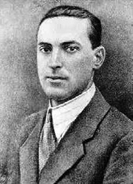

V
vagotoni (vagotonia) Vagus sinirinin aşırı duyarlığı ile tanımlanan ve vazomotor dengesizlik, kaygı, terleme, soluk alıp verme güçlükleri, istemsiz ve acı verici hareket spazmları, kabızlık gibi belirtilerle tanımlanan bedensel bir anormallik.
vagus siniri (vagus nevre) Beynin alt bölümünden başlayıp göğse, karın bölgesine kadar uzanan ve kalp atışı, soluk alıp verme, konuşma, yutma, sindirim ve daha birçok bedensel işlevi düzenleyen X siniri ve en uzun kafa siniri.
vajina (vagina) Dölyatağı ağzından, vücudun dış bölümüne dek uzanan 12-15 cm. boyundaki kaslı kanal; kadının cinsel organı; döl yolu.
vajinal orgazm (vaginal orgasm) Vajina içinde duyumsanan ve kadın cinsel tepkisinin plato evresinde vajinal dokulardaki kasılma ve şişkinlikle kendini gösteren orgazm; dölyolu dorukdoyumu. Bugün, alanla ilgili birçok kişi, vajinal orgazmın kadın cinselliğinin doğal, normal, gerçek cinsel doyum sağlayan bir parçası olduğunu savunurken, kimileri kadının orgazm olmasının tek yolunun, klitoral uyarım olduğunu ileri sürüyorlar. Bkz. cinsel tepki döngüsü; insanın sekiz çağı ((6) Yalnız Kalmaya Karşı Yakınlaşma Duygusunun Gelişimi).
vajinismus (vaginismus) Kadının cinsel (genital) bölgesindeki kasların istemsiz olarak kasılması sonucu, cinsel birleşmeye olanak vermemesi; kın kasılması. Vajinismus, cinsel ilişkiden hemen önce ya da ilişki sırasında beliriyor ve penisin vajinaya girişini çok acı verici ya da olanaksız kılıyor. Bu işlev bozukluğu, çocukluktaki ayıp, günah korkuları, suçluluk duyguları, penis korkusu, yetişkinlikte de gebe kalma korkusu gibi organik olmayan nedenlere dayanıyor. Söz konusu bozukluk, davranışçı aile tedavileriyle giderilebiliyor. Vajinismus, bugün tedavi edilebilen bir bozukluktur. Bu tür bir cinsel sorunu olan kadın, cinsel tedavi maddesinde yer alan Cinsel Yaşamı İyileştirme Yolları’nın Dördüncü Dönem’indeki uygulamaların sonuna doğru, varsa terapistinin danışmanlığında; yoksa kendi kararlılığı ve istenç gücü ile parmak alıştırmaları yapabiliyor. Bu uygulamada rahat ve gevşek olmaya özen gösteriyor. Önce serçe parmağını, ilk boğumuna dek vajinasına sokuyor ve kendini rahat duyumsayana dek orada tutuyor. Rahatlayınca ikinci boğuma dek; sonra da parmağının tümünü sokuyor. Bu alıştırmayı, hiçbir rahatsızlık duymadığına inanıncaya dek sürdürüyor. İlk boğumda rahatladığını duyumsamadan, kesinlikle bir sonraki aşamaya; ikinci boğuma geçmiyor. Nelerin kendisini rahatsız ettiğini anlamaya çalışıp onları ortadan kaldırma çabasını gösteriyor. Olanak varsa terapistten de yardım alıyor. Daha sonra aynı alıştırmayı daha kalın bir parmağıyla; örneğin orta parmağıyla yineliyor. Bu yinelemelerden sonra da kendini rahat duyumsuyorsa bu kez iki parmağını birden vajinasına sokarak benzer uygulamaları gerçekleştiriyor. İsterse bu kez eşinin parmaklarıyla bu alıştırmaları yineliyor. Eşinin parmaklarının da kendini rahatsız etmediğini duyumsadığında, aynı uygulamaları eşinin penisinin yalnızca baş bölümünün, vajinasına girip çıkmasıyla yineliyor ve sonunda vajinismusu alt ederek normal cinsel ilişkiye geçiyor.
vaka Bkz. olay.
vaka incelemesi Bkz. olay incelemesi.
vakum etkinliği (vacuum activity) 1. Bir sinir merkezinde, güdüleyen enerjinin boşalmasını sağlayacak uygun bir uyarıcının bulunmadığı durumlarda gözlemlenen çarpık ya da eksik bir tepki. 2. İlkiyle ilişkili olarak, alışılmış işaret uyarıcısının belirgin olarak yokluğunda sabit eylem yapısının ortaya çıkması; daha yalın anlatımla organizmanın yüksek bir dürtü durumunda olduğu zaman, uyarıcısız gerçekleşen bir tepki. İki tanımda da organizmanın ya da sistemin sürekli olarak enerjiyle yüklendiği ve bu nedenle sabit bir enerji çıkışına gereksinim duyduğu; bu enerji boşalmasını sağlayacak çevresel koşulların elverişsizliği durumunda biriken enerjinin, belli bir eşik noktasından sonra adeta taşan bir su gibi eyleme dönüştüğü varsayılıyor. Bu enerji birikimi, ya genel bir uyarım, heyecan arayışı biçiminde ya da oynayacak fare bulamayan bir kedinin, ip yumağına fare gibi davranmasında olduğu gibi, türe özgü davranış yapıları biçiminde varlık gösteriyor.
valin (valine) Sekiz temel amino asitten biri. Bebeklerin büyümesine; erişkinlerin ise nitrojen dengesinde rol oynayan bu amino asidin, hepatik ensepatoloji ya da alkolle ilişkili beyin hasarlarının tedavisinde ya da düzeltilmesinde etkili olduğuna ilişkin bulgular vardır. Ayrıca nörolojik bozulmaların düzeltilmesinde de yararlı olabiliyor.
vandallık (vandalism) Kamusal alanın ya da mülkiyetin, özellikle güzel ya da sanatsal olan şeylerin kasten ve kötü niyetle yok edilmesi; vandalizm.
vardama Bkz. çıkarsama.
vardamlı istatistik Bkz. çıkarsamalı istatistik.
varlıkbilim (ontology) Doğal dünyada var olan ve insan düşüncesinden, incelemesinden ayrı bir gerçekliği bulunan şeylerin doğasını, temel özelliklerini ya da var olma ilkelerini, nedenlerini inceleyen ve açıklayan metafizik dalı; ontoloji. Çağcıllık (modernizm) öncesi dönemdekilerin dış gerçekliğin; soyut biçimlerin ya da Tanrı’nın planının yetersiz bir taklidi olduğuna inanmasına karşılık çağcıllar, gerçekliğin insan aklından ve isteğinden ayrı olan; ancak bilimsel yöntemlerle varlıkları bilinebilen nesneler olarak var olduğuna inanıyor. Son çağcıllar ise gerçeklikle insan eylemi arasında, bilimsel yöntemlerle belirlenemeyecek karmaşık bir etkileşim bulunduğu inancındadırlar.
varlıkbilimsel psikoloji Bkz. ontolojik psikoloji.
varlıkları nesnel kılma Bkz. KÜLPE, Osvald.
varlık sevgisi (love of being) Maslow’a göre, karşılıklılık; karşısındakinin mutluluğuna yönelik içten bir ilgi; bağımlılık, kıskançlık ve bencillik en alt düzeye çekilerek gösterilen sevgi. Maslow’a göre varlık sevgisi, kendini gerçekleştirenlerin başlıca özelliklerinden biridir. Bkz. özgerçekleştirim.
varoluş Bkz. varoluşçu psikoloji.
varoluş bilimi Bkz. varoluşçu psikoloji.
varoluş çabası Bkz. varoluşçu psikoloji.
varoluşçu düşünce Bkz. varoluşçu psikoloji.
varoluşçu felsefe Bkz. varoluşçu psikoloji.
varoluşçuların insana bakışı Bkz. varoluşçu psikoloji.
varoluşçuluk (existentialism) Kierkegaart, Sartre, Heidegger, Nietzche gibi felsefecilerin etkisiyle ortaya çıkan ve birbirinden oldukça farklı bir dizi yaklaşımın ortak adı; eksistansiyalizm. Bu felsefi ve psikolojik yaklaşım, özet olarak şu görüşleri savunuyor: İnsan deneyimi, arı bilimsel ya da ussal terimlerle açıklanamıyor. İnsan, rastlantıya bağlı, amaçsız bir dünyada seçme özgürlüğüne sahiptir. Varoluşun temel sorunu, kendini bulmak, kendi olmak, amaçsızca “burada ve şu anı” yaşamak, kendini gerçekleştirmek ve eylemlerinin sorumluluğunu üstlenmektir. Bu yaklaşımda bireysellik, öznellik ve istenç özgürlüğü öne çıkarılıyor. Bkz. varoluşçuluk ve eğitim; varoluşçu psikanaliz; varoluşçu psikoloji; varoluşçu tedavi; varoluşsal boşluk; varoluşsal çözümleme; varoluşsal engellenme; varoluşsal güvenlik; varoluşsal kaygı..
varoluşçuluk ve eğitim (existentialism and education) Varoluşçuluğu savunan düşünürlerden kimilerinin eğitim anlayışları ve bu anlayışların dayandığı temel önermeler. Varoluşçu eğitim akımı, varoluşçuluk diye adlandırılan felsefeye dayanıyor. Bu felsefenin kurucuları ve savunucuları Kierkegaard (1813-1855), M. Heidegger (1889-1976), G. Marcel (1889- 1973), K. Jaspers (1883-1969), N. A. Bardayev (1874-1948), J. P. Sartre (1905-1980), A. Camus (1913-1960) ve W. Baret’tir. Kierkegaard’a göre varoluş, insanın gerçekleşmemiş iç varlığı, öz istencince belirlenen; ama tümüyle bilinemeyen varlığıdır. Özgürlük ise sonsuz olanaklar arasından kişinin, sorumluluğunu da üstlendiği birini seçmesidir. Çünkü kendi kendini yaratan tek varlık insandır. Heidegger’e göre kaygı, tedirginlik gibi insan kişiliğinin apriori biçimleri, bir bilinç biçimi (ruh durumu) olan arkhe, kendiliğinden oluyor ve insanın öznel varlığını oluşturuyor. Kendini sürekli olarak ölümle yüzyüze gören insanın, yaşamın her anındaki doluluk ve değerin bilincine varması için bu dünya varlığın anlamını önceden sezmesi gerekiyor. Bunu ise pratik tüm amaçları bir yana bırakarak kendi ölümlülüğünün, manevi zayıflığının bilincine vardığında gerçekleştirebiliyor. Ancak bunu başarabilen biri, toplumsal varlığın putlarından (ideallerinden, amaçlarından, bilimsel soyutlamalarından) kurtulabiliyor. Varoluş, gerçekten önce gelen bir kavrayıştır. Varlık, kişinin varolması sayesinde vardır. Kendi varlığını kendisi yaratan tek varlık insandır. Toplum gerçek değil; aldatıcıdır. Düzenli bilgi kesin olamaz; koşullu olabilir; yaklaşık, sezgisel ve kuşkuludur. Bilgi, kişinin yaşantılarının ve benimsediği tasarıların sonucu olarak bilincinde ve duygularında oluşup ortaya çıkıyor ve kişi için taşıdığı değer ölçüsünde geçerlidir. Sartre, “İnsan ne yaparsa odur.” diyor ve özne (suje) ile nesnenin (objenin) bir olduğunu söylüyor. Ona göre insan, ölümle karşı karşıya (sınır durumuna) geldiğinde kendisinin farkına varabiliyor. İnsan, varoluşun özden önce gelmesinin sonucu olarak özünü kendisi seçiyor. İçinde doğduğu toplumsal sınıfı, zekâsını seçmemiş olsa bile bunların karşısında takınacağı tutumu seçebiliyor. Varoluşun özü özgürlük olduğundan insan, isdediğini yapabiliyor. Kimse insana öğüt verme hakkına sahip değildir. Hayır ve şer, insan onları yaratırsa vardır. Varoluşun kapısı yokluğa, hiçliğe açıktır. Edinmiş olduğumuz bilgiden bağımsız maddesel nesnelerden oluşmuş bir evren yoktur. Evreni var eden, yaratan, insanın bilincidir. Bizi evren oluşturmuyor; tersine kesin olarak evren bizden oluşuyor. Biz her şeyiz: evren ise hiçbir şeydir. Kimse kendinden başkasına sahip değildir. “Ben”den başka ben yoktur. Hiçbir şey olan bilincin tüzel olan hiçbir şeyi yoktur. Bilgi, bilinen olma bilincinin adıdır. Bilmek, nesne yardımıyla kendimize ne olmadığımızı bildirmek demektir. Her şey, dış nesneler karşısında bilince dönüştürülüyor. Özgürlük, seçmek; seçmemek ise seçmemeyi seçmektir. İçsel varoluşla dışsal varoluş birdir. Görünüşler ne içseldir ne de dışsal. Örneğin, güç; hız ve sapma gibi etkilerin toplamıdır. Her varoluş, birtakım görünüşlerden oluşuyor. Bunlar ise birtakım olaylardır. Güç ve edim tektir; her şey edimdir. Görünüş ve öz, iki ayrı şey değildir; görünüşün kendisi özdür. Varoluş, insanda özden önce geliyor. Varolan insan, doğa ve toplumla türlü savaşlara, etki ve tepkilere girişirek ya da onlara katlanarak kendini yaratıyor. Bu, insanın kendi kişilik özelliklerini bu savaşlar sayesinde kazandığını gösteriyor. İnsan, her çağda başka bir değere ve niteliklere sahip oluyor. Günümüz insanı, savaşlar, açlıklar, yıkımlar, kıyımlar, ekonomik ve politik yarışmalar içinde bulunuyor. Kişiliğinin ve varolmasının değersizliğini ıstırap, bulantı ve benzeri duygularla kavrıyor. Bu kavrayış, onun ya düşünce ve eylemlerini özgürleştirmesine yarıyor ya da özgürlük düşüncesi içinde eylemlerinin anlamsızlığını, başıboşluğunu ve hiçliğini algılıyor. İnsan, günümüzün yaşam koşullarında kendi benliğini ya da bilincini yitirerek sürekli, gerçek benliğini arayan ve bu benliğin ne olduğunu anlamadan yaşayan ya da yaşatan hasta bir varlık oluyor. Kişisel istencini yitiren insanın bir robottan, makineden, eşyadan farkı kalmıyor; dahası kimsesizliğe, umutsuzluğa itiliyor. Bütün bunlardan kurtulması için onun, üzerine yüklenen ekonomik, toplumsal, tarihsel, ahlaksal ve dinsel baskılara başkaldırması gerekiyor. Varoluşçu Program: Eğitim, insanı sınır durumuna getiren bir süreçtir. Buna bağlı olarak programlar, bireyin yaşama bakışını zenginleştiren ve seçimler yapmasını sağlayan yaşantılara yer vermelidir. İnsan, kendi yaşantılarını kendisi seçmeli, düzenlemeli; bunların sonuçlarından da kendisi sorumlu olmalıdır. Varoluşçu program, insancı psikolojinin ilkelerine dayalı; olabildiğince geniş ve çok çeşitli doğa olaylarına yer veren ve kendini gerçekleştirmesi için öğrencinin seçimine sunulan bir araç olmalıdır. Konuları, tarih, felsefe, edebiyat, güzel sanatlar, etik, estetik ve insan bilimleri gibi alanlardan, öğrenciler seçmelidir. Varoluşçu eğitim, seçilen sanatçıların, öğrencinin etik ve estetik duygu ve düşüncelerini uyarıcı, kendi görüşünü geliştirici bir işlev görmesini amaçlamalıdır. Tarih, edebiyat gibi dersler, neden-sonuç ilişkisi ortaya koyma yerine, kişinin kendini sınır durumuna getirecek yaşantılar edinmesini sağlayan seçenekler ortaya koymalıdır. Bu eğitimde Sokratik yöntem kullanılmalı; ancak, öğretmen, doğru yanıtı empoze eden sorular sormamalıdır. Öğrencinin kendi düşüncelerini oluşturmasını sağlayacak yeni sorunlar ve durumlar yaratmalıdır. Eğitim ortamı için öğrencinin dikkatini yoğunlaştıracak uyarıcılar bulmalıdır. Yaşamın anlamıyla ilgili sorularla kişinin kendi doğrusunu oluşturmasına yardım etmelidir. Eğitim ortamında öğrenci kendi sorumluluğu ile baş başa bırakılmalıdır. Bunun için gerekli olan açık okul sisteminin ilkeleri şunlardır: (1) Öğrenci, geleneksel okul sistemindeki gibi zorla öğrenen, yasaklardan bunalan, zihinsel ve duygusal gelişimi engellenen, hileci, üçkâğıtçı, isyancı değil; öğrenmeye istekli, meraklı, enerjik ve açıkgözdür. Öğretmen, öğrencinin seçim yapmasını ve bu seçimden sorumlu olmasını istemelidir. (2) Geleneksel okul, yaşa, akademik duruma göre sınıflama, toplumsal görev ve yetkileri belirleme yoluyla öğrencileri bölüyor. Testler ve notlarla, diplomalarla, kazandırdığı mesleklerle rollerini çok önceden belirlemekle onları aynı fabrikadan çıkmış robot durumuna sokuyor; onun kişiliğinin özgürce gelişimini engelliyor. İnsanın işlevini yadsıyor; onu bir ideolojiye göre yetiştiriyor. Açık okul ise öğrencinin istediği konuları özgürce seçerek öğrendiği kurumdur. Bu amaçla öğrenci, eğitim ortamında sürekli yüreklendirilmelidir. Öğrenci, kendini istediği konuya ve etkinliğe yönlendirmelidir. (3) Açık okul sisteminde eğitim durumları, geleneksel okulun tersine, açık ve kesin olarak belirlenmemelidir. Açık okulda çok çeşitli, değişik, esnek ve dinamik öğrenme ortamları bulunmalıdır. Öğrenciler ve öğrencilerle öğretmenler arasındaki ilişkiler, öğrenci gekeksinimlerinden doğan ve eğitim ortamını zenginleştirecek nitelikler taşımalıdır. Kurallar ve baskı en aza indirilmelidir. Geleneksel eğitimde edilgin olan öğrenci, verileni aldığında ödüllendiriliyor; reddettiğinde de cezalandırılıyor. Disiplin dıştan zorlamayla sağlanıyor. Kaynakları doğa, kültür, toplum ve yönetimin gücü olan disiplin anlayışı bu okullarda şu sayıtlılara dayanıyor: (1) Zorlama, öğrencinin kişilik gelişimi için gereklidir. (2) Kuralların oluşturduğu düzen, yapılan işte en üst performansı sağlıyor. Bu nedenle bu kurallara ve düzene karşı çıkılmıyor. (3) Başkaldıran insan için ceza gerekiyor. Bunların, totaliter disiplin anlayışının sayıtlıları olduğu ortadadır. Açık okulda ise öğrenci kendi kurallarını üzerinde çalıştığı alanın özelliklerine göre kendisi koyuyor ve zamanını, gücünü ona göre harcıyor. Varoluşçu programda doğa, insanın seçimini sınırlayan etkendir. Çünkü ona boyun eğmek zorunludur. Toplumsal ve kültürel kaynakların ve bunların çevresinde dönen olguların sunduğu çok çeşitli olanakların yardımıyla öğrenci, bunlara karşı belli bir duygu geliştiriyor. Kişi, kendi varoluşunu gerçekleştirmek için bunlardan istediğini seçiyor. Yönetim gücü ise yalnızca çocukluk döneminde tehlikeli durumlarda kullanılıyor. Sonraki yaşlarda ise bu güce gerek duyulmuyor. Açık okulun programlarında bulunması gereken özellikler şunlardır: (1) Öğrenciye her an çok çeşitli araç gereç ve kaynaklar sunulmalıdır. (2) Öğrencinin yeteneğini geliştirecek çok çeşitli programlar düzenlenmeli ve öğrenciye bunları kullanma olanağı tanınmalıdır. (3) Aynı öğrenme gereksinimleri duyan bireyler bir araya gelebilmelidirler.. (4) Özel sorunların çözümü için baş vurulacak çok sayıda uzman bulunmalıdır. Varoluşçu eğitim, yukarıda sayılan tüm özellikleri dikkate alması gereken insancı program yaklaşımını benimsiyor. Varoluşçulara göre eğitim, yukarıda sözü edilen varoluşçu görüşleri gerçekleştirmeyi hedeflemelidir. İnsan, anlamsız bir evrene atılmış, sorumlu; ancak yalnız bir varlıktır. O, kendini, değerlerini kendisi yaratmış, yolunu kendisi seçmiş olan biricik varlıktır. Yaşam, insanın yaşamaya başlamasından sonra var oluyor; yaşama o anlam veriyor. İnsan, kendi kendini yarattığı, kendi eylemlerinden sorumlu olduğu için özgürdür. İnsanı eyleme zorlayan bunaltıyı yaşamak, bu sorumluluğu duymaktır. Anlamsız olan ve ölüm gibi fizikötesi bir eylemle son bulan evren, insana karşıdır. Bunalım, ölüm korkusunun sonucu ortaya çıkıyor; bu korku da kişiyi kendi çıkarını düşünmeye ve buna uygun eylemde bulunmaya itiyor. Kişiyi eyleme bilimsellik ve toplumsallık itmiyor. Düzenlenen programlar, kişinin kendi kendini yaratması sırasında buna olanak sağlamalıdır; okul, aile, çevre devre dışı bırakılmalıdır; çünkü çevreye uyum diye bir sorun yoktur. Buna bağlı olarak eğitim durumları düzenlenirken uyulacak ilkeler şunlar olmalıdır: Öğrenme-öğretme sürecinde aristokrat öğrencilik temel kabul edilmelidir; çünkü bilgi kişiseldir; evrensel değildir. Dahası insan, “okulun, bilginin, aklın üstünde”dir. Bu durum, çocuğu bir bütün olarak ele almayı gerektiriyor. Çünkü çocuk, hem yaşayan gerçeklik hem de olanaklarını içinde taşıyan bir gizilgüçtür. Bireyin kişiliği, eğitimin etki alanı dışındadır. Buna karşılık özyapısının biçimlendirilmesi, eğitimin görev alanına giriyor. Bu eğitim için öğretmenin, yaşam dolu öğrencileriyle doğrudan iletişim kurmayı başarması yeterli olacaktır. Eğitim ortamında öğretmenin alçakgönüllü, öğrencide güven yaratan, kendisinin farkında olan birisi olarak davranması bekleniyor. Marcel, Batı uygarlığının insanı dikkate almadığı için makineye benzeyen bir toplum yarattığını; bunun sonucu olarak da insanın kim olduğunu unuttuğunu söylüyor. Ona göre bu durumdan kurtulmak için her bireyin başat değer kabul edilmesi gerekiyor. Bunun için de birey, kendi kendini yaratmalı, özgürce eylemde bulunmalıdır. Özgürlük, başkalarının etkinliğine içten katılımdır. Bu nedenle başkalarına özgürlük tanımak zorundayız. Bu ise sevgi ve karşılıklı paylaşımla sağlanıyor. Özgürlük, onun anlamını öğrenmekle değil, deneyimle elde ediliyor. Özgür kişi, yaşamını belirleyebilen kişidir. Sarte ve Heidegger, özgürlüğün topluma, genel istence teslim edilemeyeceğini; kişinin, kendi isteği, özgür istenci ile grupla birleşebileceğini belirtiyorlar. Buna bağlı olarak grupla eğitimin, her bireyin özgürce seçimini ve gelişimini sağlayacak biçimde düzenlenmesi;. Bu yolla grubun standartlarını yükseltme yerine kişinin varoluşunun temel kabul edilmesi gerekiyor. Öğretmen, eğitim ortamında iyiyi, kötüyü, güzeli, çirkini belirtmemeli; sorulara içten ve doğru yanıt vererek iyiyi, kötüyü, doğruyu, yanlışı sezdirmelidir. Bunların seçimi, bundan doğacak sonuçların sorumluluğu öğrenciye ait olmalıdır. Bilgi kesin olmadığı için öğretmen, kendi değerlerini öğrenciye benimsetmeye kalkmamalıdır. Sokratik tartışma ya da bilimsel yöntem, öğrencinin sezgi gücünü, kendi doğrusunu tanıyıp geliştirmek için kullanılmalıdır. Kişi, her değerin üzerinde olduğundan, eğitimde öğrenci odak alınmalıdır. An önemli olduğu için günlük sorunlar ele alınmalıdır. Nesneler dünyası yerine kişinin dünyası temel olarak benimsenmelidir. Çünkü varoluşçu eğitim anlayışında, mutlu bir çağ yaratılması değil; kişisel hoşnutluk yaratılması, kişinin kendini tamamlama özleminin giderilmesi amaçlanıyor. Büyük buluşlar yapanlar, hep bu kendini tamamlama özlemini duyanlardır. İşte bu nedenle eğitim ortamı, tartışılıp seçilebilecek pek çok içeriğin bulunduğu; kişiye kendini tamamlayabileceği olanakların sunulup kullanımının sağlandığı; bireysel eğitimin bu yolla gerçekleştirildiği nitelik ve niceliğe kavuşturulmalıdır. Eğitimde aşırı uzmanlaşmaya gidilmemeli; çünkü bu, çocuğun içsel yaşamının gelişimine engel oluşturuyor. Meslek eğitimi küçük yaşta başlatılmamalıdır. Ama öğrencinin bir işi ya da mesleği, özgürleşmede bir araç olarak kullanmasının bir sakıncası bulunmuyor. Varoluşçu eğitimde sınama durumları, öğrencinin kendi varoluşunu gerçekleştirip gerçekleştirmediğini ölçecek özellikte olmalıdır. Bu amaçla öğrencinin sezgiye dayalı, özgürce seçim yapıp yapmadığı, sorumluıluk duyulup duymadığı, yaratıcılığının ortaya çıkıp çıkmadığı ölçülüp değerlendirilmelidir. Bu uygulamada ezbere dayalı, toplumsal değerleri ve yargıları, soyut bilgileri içeren sorulara yer verilmiyor. Bkz. eğitim akımları; geleneksel eğitim; HEİDEGGER, Martin.
varoluşçu psikiyatri Bkz. varoluşçu psikoloji.
varoluşçu psikoloji (existential psychology) Anlamsız bir evrene karşı insanın özgür istenciyle ve tam bir sorumlulukla direnmesi gerektiğini savunan psikoloji görüşü; eksistansiyal psikoloji teorisi. Varoluşçu psikoloji ve varoluşçu psikiyatrinin başlangıcından bugüne gelişi, özetle şöyledir: Varoluşçu psikoloji, İkinci Dünya Savaşı’ndan sonra Avrupa’da gelişmeye başladı. Daha sonra Amerika’da yaygınlaşarak geniş kitlelerin ilgisini gördü. Heidegger, psikanaliz ile psikanaliz kökenli psikoterapi’yi temel alarak geliştirdiği ve varoluş bilimi (ontoloji) adını verdiği düşünsel yaklaşımdan esinlenerek varoluşçu psikiyatriyi (existantialist psychiatry’yi) geliştirdi. Aralarında ilişki bulunmakla birlikte, varoluşçu psikiyatri ile varoluşçu felsefenin birbirinden bağımsız olarak geliştiği biliniyor. Çünkü varoluşçu psikiyatri, varoluşçu felsefeden değil, varoluş biliminden doğmuştur. Varoluşçu düşüncenin başlangıcı, Danimarkalı yazar Kierkegaard’ın yüzyıldan fazla bir süre önce, o dönemde egemen olan katı mantıkçılığa şiddetle karşı çıkışına dek götürülüyor. Hegel’in yaptığı gibi, gerçeği soyut kavramlarda aramak, Kierkegaard’a göre bir yanılgıdır. Günümüz dünyasına da çokça egemen olduğu gibi, gerçeği, yalnızca düşünerek varılabileceğine inanılan insanda arayamayız. İnsanı ölçülebilir, denetlenebilir bir nesne gibi göremeyiz. İnsan, kendisini davranışlarıyla yarattığı zaman gerçek ortaya çıkıyor. Günümüz insanının içinde bulunduğu çıkmaza bir seçenek olarak doğan bu akım, Kierkegaard’dan bu yana güçlenip gelişerek İkinci Dünya Savaşı yıllarında Jean Paul Sartre‘ın, Albert Camus’nün yapıtlarında varoluşçuluk adını aldı. Feuerbach’ın ”Bir düşünür gibi düşünme! Yaşayan gerçek bir varlık olarak düşün!..” sözünün özetlediği varoluşçu anlayış, Dostoyevski, Kafka gibi yazar ve düşünürlerin yapıtlarında da yer aldı. Varoluşçu psikiyatri, herhangi bir kişilik kuramını içermediği için, bağımsız bir ruhsal tedavi yaklaşımı olarak nitelendiriliyor. Varoluşçu psikiyatri bir yöntem değil, tedaviyi yürüten kişinin kuramsal birikiminin sonucu olarak oluşan bir tutumdur. Bir kuram olmayan varoluşçu psikiyatri, psikiyatristin, tedaviye gelen kişiyle ilişkisindeki tutumunu tanımlamakla birlikte yine de ağırlıklı olarak belirli bir kurama dayanıyor. Varoluşçu psikiyatrinin ilk örneği olan Daseinalysis’i geliştiren Boss ve Binswanger, varoluşçu psikiyatri tutumlarını, psikanalitik kuramla onun uygulama tabanına oturttular. Bu tedavide, ayrıntıdaki davranış örüntülerinin ve bunların arkasındaki dinamiklerin öğrenilmesini gerekli görmenin nedeni budur. Bu bilgiler ise, ancak, tedavi ortamında birlikte olunan insanın varoluş yapısı içinde elde edilebiliyor. Varoluşçu psikiyatristlerin çoğu, psikanalitik kuramdan yararlanarak çalışmalarını sürdürseler de birbirlerinden farklı tedavi uygulamaları ortaya koyuyorlar. Ayrıca varoluşu, bilinen kavramlarla açıklamanın güçlüğü de ortadadır. Yirminci yüzyılın ilk yarısında ünlenen psikolog ve psikiyatristlerden Carl Gustav Jung da yaşayan süreçlerin kuramlara sokulmasının güçlüğünü, “Kuramlarını iyi öğren; ama yaşayan ruhun mucizesine dokunduğunda, onları bir yana bırak.” sözüyle belirtmiştir. Varoluşçu psikiyatri, önceliği, ben’in (kendi’nin) algılanabilmesine ve yaşanabilmesine tanıyor. Bu yaklaşıma göre çözümün ön koşulu, kişinin sorunlarına çözüm sağlamayan ben’in yaşanmasıdır. Bunu önemsemeyen ruhsal tedavinin başarısı, biçimsel düzeyde kalıyor. Tedavi eden kişinin (terapist’in), kendisine başvuran kişiyi koşulsuz kabul edişinin, onun kendini gerçekleştirebilmesi için yeterli olduğunu savunan görüşler de; psikanalitik tedavide kişinin, çözümlemeciye karşı geliştirdiği olumlu aktarım tepkilerine önem verilmesi de birer yanılgıdır. Dahası, kişide temel gereksinimin sevgi ve kabul etme olduğu inancının geliştirilmesi, onun edilginleşmesine yol açabiliyor. Çünkü önemli olan, kabul etmek değildir. Bu kabul etme ile kişi ne yapacak, kendi ben’ini algılayıp kendi varoluş sorumluluğunu nasıl yaşayacak? Önemli olan budur. Rolla May’e göre, ben’i yaşamakla benliğin (egonun) işlevini yerine getirmesi ayrı şeylerdir. Benlik, daha güçlü iki ruhsal bölgenin süreçleri arasında sıkışıp kalmış ve ilkelbenlikten üretilmiş olan edilgin, zayıf bir kişilik bölgesidir. Kişiliğin dış dünya ile ilişkisini kuran, dış dünyanın bir yansıması olan özne-nesne ilişkisindeki öznedir. Önemi, kendisinden çok, geliştirdiği savunmalardan ileri geliyor. Ben ise, bir özne değil; kendisini “o anda var olmakta olan bir özne” olarak algılayabilen bir yaşantıdır. O, gerektiğinde dış dünyaya karşı bir tutum takınabiliyor; var olmamaya karşı çıkabiliyor Ben’i yaşamak, bilinç ile, bilinçdışı ile insanın bütününü içeriyor. Varoluşçuların insana bakışı: Varoluş bilimi olan ontoloji, Yunanca; aynı anlama gelen ekzistansiyalizm de Latincedir. Bu yaklaşım, insanı birtakım birimler ve mekanizmalar topluluğu değil; olmakta olan bir varlık olarak görmüş ve öylece anlamaya çalışmıştır. Bununla birlikte, varoluşçu davranışların arkasındaki dinamik gücü ve mekanizmaları, varoluşçu tutumu benimseyen psikiyatristler de inceliyorlar. Ancak, bunu yaparken doğru görünen şeylerin her zaman gerçek olmayabileceğini de göz önünde bulunduruyorlar. Varoluşçu, hem öznelliğin hem de nesnelliğin altındaki gerçeği araştırıyor. İnsanın yaşadıklarıyla birlikte, yaşananları yaratmakta olan insanı da inceliyor. Çünkü ona göre gerçek, insanın yaşamakta olduğu anda kendi dünyasında yaşadıklarıdır. Bir düşünüş biçimi olarak varoluşçuluğun, Batı kültüründe yaşanan bunalımlara bir yanıt olmak üzere yazın, resim, felsefe, psikoloji ve psikanaliz alanında birbirinden habersiz ürün veren kişilerce ortaya konduğu görülmüştür. Heidegger, Ortega Gassel, Medart Boss ve Ludwig, bu kişiler arasında yer almıştır. Batı’nın yakın geçmişte yanıtlamaya çalıştığı varoluşsal soruların Doğu’da Zen ve Laotzu gibi düşünürlerce, yüzyıllar önce ele alınmış olması, düşündürücüdür. Laotzu, “Varoluşu tanımlamak, sözcüklerin gücünün ötesindedir.”; “Kavramlar kullanılsa da hiçbir zaman mutlak anlamlarını yansıtmazlar.”; “Yapmanın yolu olmaktır.”; “Varoluşunun derinliğini yaşamaya çalış; oradan uzaklaştıkça daha az öğrenirsin.” diyor. Doğaya ve Kendine Yabancılaşan İnsanın Varoluş Çabası: Varoluş bilimiyle ilgilenen varoluşçular da Doğu felsefecileri de insanın doğaya egemen olma çabalarının, onu doğaya ve kendine yabancılaştırdığını belirtiyorlar. Doğu düşüncesi, şimdilerde batıda varoluşçulukla aşılmak istenen özne-nesne ikilisinin hiçbir zaman kurbanı olmuyor. On dokuzuncu yüzyılda Avrupa’da duygular; çalışma tutkusu ve katı ahlak kurallarıyla sınırlanıp yönlendirilince kişilikler de birbirine yabancılaşmış bölümlere ayrılmaya başladı. Giderek, olmakta olanı yaşama yerine, olması gerekeni yaşayan bir dünya oluştu. Bilimde de benzer bölüşüm ortaya çıktı. Her bilim dalı, ortak ilkelere bağlı kalmaksızın, kendi yönünde gelişti. İnsan bilimlerinde de yaşanan bu kargaşa, insanı anlamayı daha da zorlaştırdı. Bu durumda insanın, kendisini yöneten sistemler ağına başkaldırması, bu yabancılaşmaya çözüm getirmeyeceğine göre, yapması gereken, içinde bulunduğu koşullara karşın, kendini var etmeye çalışmak, sorumluluğunun gereğini yerine getirmektir. Kierkegaard, Nietzsche ve Freud da bunu yaptı; kendi kişiliklerini inceleyerek bilgilerini geliştirdiler. İnsanlar, egemen sistemin beklentileri yönünde başarılı olma ve kazanma tutkusuyla yaşadıkları; hiçbir şeye gerçek anlamda bağlanamadıkları bir dünyada nasıl birey olacaklardır? İçtenliği, ancak içsel yaşantılarının ayrımında olan insan, dünyayla kurduğu ilişkilerinde yaşayabiliyor. Kierkegaard şöyle diyor: “Gerçeğe öznel açıdan bakış, kişinin ilişkisine öznel olarak yönelmeyi içerir. Bu ilişkide gerçeklik varsa, ilişkide şizofrenik bir varoluş gibi gerçek olmayan bir şeyler olsa bile, kişi gerçeği yaşıyor.” Ona göre, “Kişinin nesnel gerçekle nasıl ilişki kurduğu, nesnel gerçeğin kendisinden daha önemlidir. Hiçbir varoluş, gerçek ilişkiyi görmezlikten gelemez.” Bu yaklaşım, psikolojide de geçerli olan, bir olaya katılmadığımız oranda, o olayı daha iyi gözleyeceğimizi ileri süren geleneksel yaklaşımın karşıtıdır. Gerçekte, olaya katıldığımız oranda, olayı daha yansız gözleyebiliyoruz. Bunun yanında, katılmadığımız halde, katıldığımızı sandığımız pek çok yaşantımızın olduğunu da bilmeliyiz. Varoluş ve Hiçlik: Var olmamak ya da hiçlik, var olmanın ayrılmaz bir parçasıdır. Var olmanın anlamını kavramış olmak, her an yok olma olasılığını da kavramak demektir. İnsanın anlamlı yaşayıp yaşamadığı konusunda kaygılanmasının nedeni, doğmuş olduğunu ve bir gün öleceğini bilen tek canlı oluşudur. Bu kaygıyı yaşamak istemeyen birçok kişi, ortak tepki ve tutumlar içinde eriyip yok olmayı seçmiştir. Var olmamanın en somut biçimi, ölümdür. Günümüz uymacılığına (konformizmine) kapılıp var olmayarak yaşayanlar da vardır. Kaygımızı, düşmanca duygularımızı, saldırganlığımızı bastırarak kendi varoluşumuza yabancılaşmak yerine, onlara katlanmak ve olabildiğince bu duyguların gücünden yapıcı yolda yararlanmak da var olmanın yollarından biridir. Ancak, bu duyguların yoğun biçimde yaşanması ve insanın kendisiyle, çevresiyle ilişkilerine egemen olması, ben’i yok edebilir. Var olmak amacıyla bu duyguların yaşanabileceği durumlardan sürekli kaçınmak ise, Nietsche’nin “güçsüz insanlar”ı gibi cılız ve gerçek dışı bir ben’i yaşamak demektir. Freud’un çevresinde yer aldıktan sonra kendi psikanalitik kuramlarını geliştirenler arasında varoluşçuluğa en yakın kişi, Otto Rank oldu. Rallo May’e göre kaygı (anxiety), yaklaşmakta olan bir hiçe indirgenme tehdidinin yaşanmasıyla oluşan bir duygu biçimidir. Bu duygu, insanın tümüyle özgür olduğu, buna bağlı olarak da nasıl seçim yaparsa kendini öyle var edebileceğinin sorumluluğunu ayrımsadığı anda yaşanıyor. Ne ki bu katlanılması güç duygudan kurtulmak için insan çoğu kez, özgürlüğünden kaçmayı yeğliyor. Varoluşsal Suç (existentiel culpability): İnsanın yeni bir varoluş gizilgücünü de içeren her yeni özgürlükten kaçınmaya yönelmesinin nedeni, özgürlüğün yok olma tehdidini de birlikte getirmesidir. Bu kaçınmanın bedeli ise, suçluluk duygusudur. Kişi, bu olguda gerçekten suçludur. Varoluşçu dilde bunun adı, varoluşsal (ontolojik) suçtur. Çok boyutlu olan bu suçun boyutlarından biri, insanın doğadan kopmuş olma suçudur. Çoğumuza farkında olmadığımız yoğunlukta bir yük taşıtan, bu suçtur. Bu varoluşsal suçun bir başka boyutu da insanın, kendi bakış açısıyla değerlendirerek öbür insanları sınırlı ölçülerde anlayabilme; insanların gereksinimlerini gereğince fark edememe suçudur. Varoluşsal suçun önemli bir özelliği, onu herkesin yaşamasıdır. Çünkü herkes, başka insanların gerçeklerini çarpıtıyor ya da kendi gizilgücünün tümünü gerçekleştiremiyor. Ancak, bu suçluluk, içinde yaşadığımız kültürün değer yargılarına aykırı davrandığımızda ya da toplumun bizden beklentilerini yerine getiremediğimizde yaşadığımız suçluluktan; ayrıca, nevrotik suçluluk duygularından da farklıdır. Varoluşsal Kaygı: Nevrotik kaygı, normal varoluşsal kaygıdan kaçınma sonucu yaşanıyor. Varoluşsal kaygı ise, anlamsız bir dünyadaki sınırlı yaşamımıza bir anlam katıp katamadığımız konusunda yaşadığımız bir duygudur. Varoluşsal suçu da bu sorumlulukla yüzleşmekten kaçınma nedeniyle yaşıyoruz. Varoluşsal suç, yaşamımıza anlam katıp katmadığımızı düşündüğümüzde değil, herhangi bir andaki varoluşumuzu algılama ve bunu yaşantıya dönüştürme özgürlüğünü yadsıdığımızda oluşuyor. Varoluşçu psikiyatrist, tedaviye gelen kişiyi, çevresindeki insanlar dünyası ile değil, onun içinde var olduğu kendine özgü dünyasında anlamaya çalışıyor. Varoluşçulara göre, Batı dünyası insanının yaşadığı kaygının ve umutsuzluğun kökeninde, kendi dünyasını yitirmiş olma olgusu yatıyor. Oysa, Doğu dillerinde, örneğin Japoncada “Bu çiçek çok güzel!.” dendiğinde bununla, ”Bu çiçek, bana göre çok güzel!” anlamı iletiliyor. Çağdaş insan, hem insanlar dünyasına yabancılaşmıştır hem de kendi dünyası içinde tutsak durumundadır. Yabancılaşma, kopukluk, ilişkisizlik ve duygusal donukluk yaşayan ya da sorunlarını mantıksal, zihinsel formüllerle kapatmaya çalışan insan sayısının giderek artmasının nedeni budur. Belki de çoğumuz böyle davranıyoruz. İnsan, geçmişi, içinde yaşadığı zamana getirerek yaşama ya da uzun süreli geleceğin tasarımlarına uygun davranma yeteneğine sahip olduğu için, varoluşçu psikiyatri, varoluşun zaman boyutunu çok önemsiyor. İnsanı, olmuş bitmiş bir süreç olarak değil, her an olmakta olan ve -yor, -makta, -mekte ekleriyle anlatılan süreç içinde ele alıyor. Geleneksel düşüncenin etkisiyle çoğumuz, yaşadığımız anı, daha önce yaşanmış olanlara ve gelecekte yaşanması tasarlananlara göre değerlendirme eğiliminde olduğumuz için kendimizi çok az fark edebiliyoruz; bunun sonucu olarak da çok az özgür olabiliyoruz. İnsan, zaman açısından saatlere tutsak ediliyor. Çağdaş teknolojik yaşam, insanların çoğunun gününü önceden programlayıp, zamanını saat hesabıyla satışa çıkarmaya zorluyor. Böyle de olsa, içinde bulunulan anı, geçen, kalan hesabından bağımsız olarak yaşayabilmek önemlidir. Çünkü saatin farkında olmamız, birlikte olduğumuz kişi, konu ya da işle aramızdaki bağı koparıyor. Örneğin, sınava hazırlanan öğrenci, zamanla ilgilenmeye başladığı anda, konudan kopmuş, konuyla birlikteliğini sona erdirmiş demektir. Yaşadığımız anda değil, yaşamadığımız anlarda süremizin sınırlı olduğunu anımsıyoruz. Yaşadığımız anlar, “A! Ne kadar zaman geçmiş!” dediğimiz anlardır. Minkowsky, kişinin kaygı ve depresyon yaşamasının nedenini, onun zamanla olan ilişkisinin bozulması ve gelecek kavramını yitirmesi ile açıklıyor. Depresyondaki şizofrenik bir hastanın, her gününü geçmiş ve gelecekten bağımsız bir ada gibi yaşadığını; sonuçta umudunu ve süreklilik duygusunu yitirdiğini gözlemlediğini belirtiyor. Varoluşçu psikiyatyatristler, varoluşun zaman boyutuna, gelecek zamanın, geçmiş ve şimdiki zamandan daha çok egemen olduğu kanısındadırlar. Çünkü o anda olmakta olan insan, bir sonraki anda geleceğe doğru yöneliyor. Geçmişin belirleyici nitelikteki olaylarının anlamını da şimdiki ve gelecek zaman belirliyor. Geçmiş, şimdiki zamandan bağımsız yaşadığımız olaylar deposu değildir. Yaşanmak üzere olan andaki gerçeğimize göre, kabul edilmiş geçmişimizin içinden o anda seçilmiş olaylardır. Tedaviye gelen kişinin, geçmişinden getirdiği olaylar, gerçekte onun geçmiş yaşantılarını yansıtmıyor. Bunların çoğu cansız, cılız, tekdüze bilgilerdir. Perişan bir geçmişin bu üzücü öyküleri de kişinin şimdiki ve gelecek zamanla yüzleşmesinin göstergeleridir. Kaygının ve öbür can sıkıcı belirtilerin yükünden kurtulup biraz özgürleşmeden, geçmişi kendi gerçeği içinde anlamak olanaksızdır. Geleneksel tutuma göre, tedaviye gelen kişiyi, kullandığımız teknikle anlayabiliyoruz. Batı düşüncesine egemen olan bu görüşün sonucu olarak, yapılaştırılmış ruhsal tedavi yöntemleri geliştirilmiştir. Tedaviye gelen kişilerin, bu yöntemler çerçevesinde değerlendirilerek anlaşılacağı varsayılıyor. Varoluşçu psikiyatride ise, anlama, teknikten ileri tutuluyor. Geleneksel yaklaşımlarda kaygının dindirilmesi için hekime karşı geliştirilen direncin kırılması, tedaviye gelen kişinin ayrıntılı yaşamöyküsünün alınması gibi, hekimin yapması gerekenler vurgulanıyor. Varoluşçular ise, özellikle tedavi sürecinin içeriğinde yoğunlaşıyorlar. Sonuçta da varoluşçu psikiyatristin tekniği, bir kişiden öbürüne, bir evreden öbür evreye değişen bir esneklik gösteriyor. Bu tutum, somut öğeler üzerinden denenen bir esnekliktir. Geleneksel psikiyatri yaklaşımlarında hekim, kendini, tedaviye gelen kişinin beklentilerinin imgesel bir yansıması ile sınırlıyor. Oysa varoluşçu tedavide, tedaviye gelen kişiyle hekim arasında gerçek bir ilişki yaşanıyor. Hekim, tedaviye gelen kişiyle geçirdiği saat süresince kendi sorunlarını bir yana bırakarak, onun bu süre içindeki varoluşunu anlayıp yaşamaya çalışıyor. İnsanın varoluş gerçeği, sürekli olarak bir şeyle ya da bir insanla olan ilişkisini içeriyor. Onun için, tedaviye gelen kişinin ilişki alanının önemli bir parçasını oluşturan hekim de tedaviye geleni ancak, onun dünyasına katılarak anlayabilecektir. Tedaviye gelenin beklediği de budur; açıklama değil, yaşantıdır. Ne yaşamakta olduğumuzu tümüyle seçebildiğimizde, yaşadıklarımızın nedenlerini de anlamış oluruz. Öyleyse, ruhsal yönden sağlıklı bir yaşam, varoluş gerçeğine uygun bir yaşamdır. Varoluşçu psikiyatrist, hastasını işte bu bilince ulaştırmaya çalışıyor. Bkz. varoluşçu tedavi.
varoluşçu psikolojiye göre ruh sağlığı Bkz. ruh sağlığı.
varoluşçu psikoterapi Bkz. varoluşçu tedavi.
varoluşçu ruhbilim Bkz. varoluşçu psikoloji.
varoluşçu tedavi (existential therapy) Varoluşçuluğu temel almakla birlikte, oldukça öznel bir temelde yürütülen bir tür hümanist (insancıl) psikoterapi. Bu tedavi, eçmişi kurcalama, bilinçdışı çatışmaları su yüzüne çıkarma gibi klasik psikanalitik yaklaşımlarla çevreye uyum sağlama gibi davranışçı yaklaşımları reddediyor. Bunun yerine bugünü, bugünün değerlerini, sorunlarını önemseyen bir yaklaşım benimseniyor. Özgürlük, özgür istenç, sorumluluk, benliğin sınırları, kimlik, yalnızlık, yaşamın anlamı, ölüm gibi temel yaşamsal sorunlar tartışılarak hastanın farklı görüş açıları kazanmasına ve bu yolla duygusal ya da davranışsal sorunlarının üstesinden gelmesine yardım ediliyor. Bkz. varoluşçu psikoloji.
varoluşsal boşluk (existential vacuum) V. Frankl’e göre, yaşamak için bir neden bulunmamasının ve bundan dolayı yaşamı sorgulamasının bireyin ruhunda yarattığı boşluk duygusu. Bkz. can sıkıntısı; varoluşçu psikoloji.
varoluşsal çözümleme (existential analysis) Varoluşçu tedavide bireyin kendi değer sisteminin, ilişkilerinin, inançlarının oluşturduğu kendi varlığını çözümlemesi; eksistansiyel analiz. Bu çözümlemenin hedefi, olanı kabul etmek değil; yeni ve daha doyurucu varoluş biçimlerini yaratmaktır. Çünkü varoluş, sabit bir durum değil; bir oluş sürecidir. Bkz. varoluşçu psikoloji.
varoluşsal engellenme (existential frustration) V. Frankl’e göre, yaşamak için bireyin bir anlam, bir “neden” bulamamasının yol açtığı engellenme duygusu. Bu duygu zamanla varoluşsal boşluğun oluşmasına neden oluyor. Bkz. varoluşçu psikoloji.
varoluşsal güvenlik (ontological security) Son çağcıl psikolojide, benliğin ve toplumsal kimliğin temel varoluşsal parametreleri de içinde olmak üzere, doğal ve toplumsal dünyanın göründüğü gibi olduğuna olan güven ya da inanç. Bkz. varoluşçu psikoloji.
varoluşsal kaygı (existential anxety) Anlamsız bir dünyadaki sınırlı yaşamımıza bir anlam katıp katmadığımız konusunda yaşadığımız duygu. Bkz. varoluşçu psikoloji (varoluşsal suç).
varoluşsal suç Bkz. varoluşçu psikoloji.
varoluş sorumluluğu Bkz. varoluşçu psikoloji.
varoluş ve hiçlik Bkz. varoluşçu psikoloji.
varsanı (hallucination) Bir algısal bozukluk; olmayan bir şeyi görme, duyma, algılama; hallüsinasyon, birsam, sanrı. Kişi, herhangi bir algısal uyarılma olmadan, algısal yaşantılara sahip oluyor. Sanrıları yanılsamalardan ayıran, uyarılma kaynaklarının olmamasıdır. Türlü sanrılar vardır. İşitme, görme, dokunma, tat alma bunların belli başlılarıdır. Yalnızca ruhsal bozuklukları olanlar değil; normal kişiler de sanrılar görebiliyorlar. Galton, normal kişilerin hangi koşullarda sanrılar gördüklerini araştırmış ve kişinin dul kalma gibi, uzun süre yalnız kalması; yani, anlamlı ilişkilerden yoksun yaşaması, uzun süre aç kalması, uzun süre uykusuz kalması durumunda sanrılar gördüğünü belirtmiştir. Olumsuz sanrı (negative hallucination) olayında ise, tersine, uyarıcı durumundaki bir nesne algılanamıyor. Örneğin, uyutum sırasında kişi, önündeki sandalyeyi algılayamıyor ve ona çarpıyor. Bkz. duygusal psikoz; gerçeklik testi; varsanısal imge.
varsanısal imge (hallucinatory image) Var olmamasına karşın gerçek sanılan imge; sanrısal imge.
varsayım (hypothesis) 1. Yerine göre sayıtlı, öneri, sanı, sav, olumsallık, geçici açıklama, önerme, tartışma konusu olan eylem, kuram ya da görüş anlamında gelişigüzel kullanılan terim. 2. Uygulama ile doğrulanması gereken ya da beklenen öneri. Geçici bir açıklama yapan bir sayıtlı ya da yanıltı; bir deneyle ya da bir dizi gözlemle yanıtı alınacak, doğaya sorulmuş soru. Varsayım, araştırmalarda, yardımcı bir araç görevi yapıyor. Deney sonuçlarına aykırı düşünce de gerçek dışı sayılıyor. 3. Mantıkta; uslamlamaya başlarken verilen bir mantık yolu ile başka önermelerin çıkarılacağı kesinleşmiş önerme, varsayımsal bir önerme. 4. Yöntembilimde, bir olguyu ya da bir grup olguyu koşul olarak açıklamada ileri sürülen ilke ya da birtakım gözlem ve deney yaparken, daha sonraki kanıtlarla doğrulanıncaya ya da çürütülünceye dek birtakım olayların nedenini bulmak için kullanılan geçici bir sayıtlı. Bu varsayımın çeşitleri bulunuyor. Varsayımlar, yeni bilgiler ve yollar kazandırdığında verimli oluyor. Bilimin sınırlı bir alanında sağlanan gerçeklerle ilişkili olarak kullanılan varsayımların tümü ya da birbirine bağlı varsayımların toplamı, bir kuram oluşturuyor. 5. Hayvan psikolojisinde, hayvanların ayırt edilebilecek karmaşık durumları öğrenebileceğini belirten, çıkarsamaya dayalı bir değişken. Bu değişken, çok kez başarıya götürmese de hayvanın belli bir uyarıya verdiği tepkilerin yineleneceğini gösteren bir çıkarım süreci sayılıyor. Bu, sınama-yanılma yoluyla öğrenmelerde bir dizi seçime anlam kazandıran bireysel bir tutum anlamına geliyor. Tolman ve Kreshevsky, bu kavramı, dolambaçtaki seçim noktalarında hayvanın davranışını açıklamak için kullanmışlardır. Hayvanın, “U uyarıcısına T tepkisinde bulunursam A amacına erişirim.” gibi, varsayıma eş bir davranışta bulunduğundan söz ediliyor. 6. Eğitim ve rehberlikte, gözlemlere başlamaya ve rehberlik etmeye; elverişli verilerle başka görüşleri araştırmaya ve birtakım sonuçları önceden kestirmeye yarayan bir kılavuz düşünce, geçici bir sayıtlı ve olasılıklarla ilgili bir bildiri.
varyans (variance) Bir frekans dağılımındaki değişkenliğin; bir puanlar kümesindeki dağılımın ölçüsü. Standart sapmanın karesi olarak dile getirilen ve genellikle varyans analizi adıyla anılan istatistiksel testlerde kullanılan varyansın büyüklüğü, belli bir puanın ortalamadan uzaklığını gösteriyor. Bkz. varyans analizi; varyans bileşenleri.
varyans analizi (analysis of variance (ANOVA)) Belli bir popülasyondan seçilen iki ya da daha fazla rastgele örneklemin elde edilen ortalamaları arasındaki farkın istatistiksel açıdan anlamlı olup olmadığını belirlemek amacıyla merkezi limit teoremi ilkelerine uygun olarak uygulanan bir test; varyans çözümlemesi. Bu testte, F testi denilen bir yöntemle F değeri hesaplanıyor. Bu değerin, 1’den yeterince büyük olması durumunda, elde edilen ortalamalar arasındaki farkın, istatistiksel açıdan anlamlı olduğu sonucuna varılıyor. Bkz. kovaryans analizi; istatistiksel anlamlılık.
varyans bileşenleri (variance components) Gözlemlenen puanda birleştiği varsayılan ayrı bileşen parçaların varyansları. Varyans analizi yöntemleriyle hesaplanan bu varyanslar, sıklıkla duruma, yere, biçime, puanlayana, zamana ve benzerlerine bağlı etkileri yansıtıyor.
vazektomi (vasectomi) Bir doğum denetim yöntemi olarak, testislerden sperm taşıyan kanalların, cerrahi yöntemlerle kesilmesi. Bu işlem sonrasında cinsel istek, cinsel etkinlik ve performansta bir azalma olmuyor; sperm üretimi sürüyor; ancak, vücuttan atılamıyor. Kesilen kanal, daha sonra yeniden birbirine bağlanabilse de başarı şansı çok düşük oluyor. Bu nedenle buna çoğunlukla kalıcı bir kısırlaştırma olarak bakılıyor.
vaziyet Bkz. durum.
vazokonjestiyon (vasocongestion) Cinsel heyecan nedeniyle cinsel bölgelerde kan toplanması. Bu, cinsel organların şişmesini ya da dikleşmesini sağlıyor.
vazomotor (vasomotor) 1. Kan damarlarının genişlemesini ya da daralmasını, böylece kan basıncını ve akışını denetleyen sinirler, ilaçlar ya da maddelerle ilgili. 2. Kan damarlarının genişlemesi ya da daralmasıyla ilgili.
vazopressin (vasopressin) Hipotalamusun üretip hipofiz bezinin salgıladığı ve böbreklerin suyu yeniden emmesiyle vücudun su dengesini korunmasında etken olduğu bilinen bir antidirüetik hormon. Vazopressin, ayrıca kan damarlarının, bağırsak sisteminin düz kaslarının ve dölyatağının kasılmasını denetliyor. Bunun yanı sıra, bilgilerin bellekte saklanmasında ve anımsanmasında da rolü olduğu sanılıyor.
vecit Bkz. esrime
vegan (vegan) Yumurta, süt, peynir ve benzerleri de içinde olmak üzere, hiçbir hayvansal ürün kullanmayan arı bir vejeteryan.
vejeteryan (vegetarian) Diyetinde ete ve et ürünlerine yer vermeyen; onların yerine bitkisel besinlere ağırlık veren kişi. Bu kişiler, dengeli beslenme konusunda dikkatli olmadıklarında, vitamin B12 ekjsikliği gibi önemli sorunlar yaşıyorlar.
vekil anne (surrogate mother) 1. Bir başka kadının yapay yöntemlerle döllenen yumurtasını kendi döl yatağına alarak onun için çocuk doğuran kadın. 2. Harry Harlow’un, maymun yavrularındaki anneye bağlanma davranışı yapılarını araştırmak için kullandığı metal telle ya da yumuşak kumaşla kaplı bebekler. Bu sırada yavru maymunların yumuşak anneye daha çok bağlandığını; kendisini sert, soğuk metal telli anne ile avutmak zorunda kalan yavruların ise önemli davranış bozuklukları gösterdiği izlenmiştir.
vekil anne baba (surrogate parent) Gerçek anne babanın yerini ya da işlevlerini üstlenen kişi. Bu üstlenme, vekil anne 1. durumunda olduğu gibi biyolojik de olabiliyor.
vekil eş (subrogate partner) Cinsellik tedavisinde, doyurucu bir cinsel ilişki kurabilecek duruma gelmesi için ketleme ve direnmelerinin üstesinden gelmesini sağlamak üzere hastaya yardımcı olacak biçimde eğitilen ve eş yerine geçen kişi.
vektör (vector) 1. Matematik ve fizikte, büyüklüğü ve yönü bulunan hız, momentum, güç ve benzeri bir nicelik. Bu niceliklerle gerçekleştirilen matematiksel işlemler, kendine özgü kurallara göre yapılıyor ve kendine özgü sonuçlar veriyor. Örneğin, birbirine dik iki gücün toplam etkisi, güçlerin aritmetiksel toplamına eşit olmadığı gibi, yönü de farklıdır. Vektörlerin bu özelliğinden etkilenen psikologlar da ruhsal işleyişte benzeri vektörel uygulamalar öngörmüşlerdir. Örneğin, K. Lewin’in alan kuramında, bir bireyin yaşam alanındaki ruhsal hareketiyle ilişkili güçleri göstermek için kullanılıyor. Bkz. vektör analizi. 2. İstatistikte, puanları ya da değişkenleri uzunluğu ve yönü olan bir doğru biçiminde gösterme. 3. Tıpta enfeksiyon ajanını bir organizmadan öbürüne aktaran sıtma virüsünü taşıyan sivrisinek ya da aşılardaki virüsler gibi taşıyıcı. 4. Moleküler biyolojide, yabancı bir DNA parçasını alıcıya aktarmak için kullanılan ajan. Bkz. yaşam alanı.
vektör analizi (vector analysis) K. Lewin’in, bir bireyin kendi yaşam alanındaki ilişkilerini inceleme ve belli bir anda onu etkileyen güçleri ya da vektörleri belirleme tekniğine ad olarak verdiği matematiksel bir terim; vektör psikolojisi, vektör çözümlemesi. Bu güç vektörleri, çatışan hedefler gibi, uzunluğu ve yönü farklı çizgilerle şematik olarak gösteriliyor. Bkz. değerlilik; topolojik psikoloji.
vektör çözümlemesi Bkz. vektör analizi.
vektör psikolojisi Bkz. vektör analizi.
Ven şeması (Ven diagram) İki ya da daha fazla değer, veri ve benzeri grubun birbiriyle ilişkisinin, birbirine geçen dairelerle gösterildiği bir tür şema. Bu ilişkiler, kapsama, dışlama ve örtüşme terimleriyle de anlatılıyor.
ventromedital merkezler Bkz. açlık; susuzluk.
veri (data) 1. Bir sonuca varabilmek için gerekli ilk bilgi, dayanak bilgi ya da belge. Bilinen dayanaklar ya da ipuçları. 2. Felsefede, her türlü işlemden önce bilinçle araçsız ve doğrudan zihinde var olan. Varsayımsal olarak yapılanın karşıtı. 3. Psikolojide, bilincin verileri gerek duyu ve algılarla gerekse arı akılca doğrudan verilen bilgi öğeleri; duyu ve algıların içeriği. 4. Mantıkta, uslamlamada çıkış noktası olarak alınan, tartışmasız benimsenen temel öğe ve önermeler. Sonuçlara ulaşmada kullanılan kanıtlanmış gereçlerin tümü. 5. Eğitimde; sorun çözmede, özellikle matematikte çözümü gerçekleştirmeye yaradığı bilinen ya da kanıtlanmış olan gerekli temel öğeler. 6. Deneysel eğitimde ve tüm bilimsel çalışmalarda iyi hazırlanmış bir araştırmaya başlarken kesin ya da gerçek diye benimsenen; çıkış noktası yapılan öğeler ya da ilkeler. Üzerinde yorum yapılabilecek gözlemlerle test sonuçlarının tümü. Güvenilir olması için ham veriler değil, istatistiksel işlemden geçmiş veriler kullanılıyor.
veri çarpıtma (falsification) Araştırma etiğine göre, verilerin çarpıtılması, deneyin prosedürüne uygun yapılmaması gibi araştırmanın doğruluğunu zedeleyecek davranışlar. Uydurmadan farklı olarak veri çarpıtma, verilerdeki çarpıtmaları belirlemek, araştırma ve istatistiksel yöntemler konusunda belli bir bilgi gerektiriyor.
verili statü (ascribed status) Kişinin cinsellik, ırk, sınıf gibi doğuştan kazandığı ya da sonraki yaşamında kendi istenci dışında edindiği toplumsal konumu. Bkz. edinilmiş statü.
verili yeni strateji (given-new strategy) İletişimde, dinleyicilerin söylenenlerin işaret ettiği bilgileri bellekte arayarak yeni bilgilerle bütünleştirdiği bir strateji.
verimli çalışma (effcient working) Öğrenilecek konunun öğreniliş nedenini öğrenme; planlı çalışma; çalışma zamanını iyi ayarlama; uygun bir çalışma yeri belirleme; dikkati çalışma konusu üzerinde yoğunlaştırma; uzun konularda bütün-parça-bütün yöntemini kullanma; yeterli okuma hızına ulaşma; iyi ödev hazırlama, sınavlarda başarılı olma yollarını kavrama ile gerçekleştirilen çalışma. Verimli Çalışıp Çalışmadığını Anlamak İsteyen Herkesin Kendisine Soracağı Sorular. (1) Çalışmaya başlamadan önce, söz konusu çalışma ile hangi amaca ulaşacağımı belirliyor muyum? (2) Günlük, haftalık, aylık, yıllık çalışma planları yapıyor muyum? (3) Her konuya yeterli zamanı ayırıyor muyum? (4) Çalışmaya ayırdığım zamanı dikkat dağıtıcı etkenlerle kesintiye uğratmadan kullanıyor muyum? (5) Düşünce yazılarını ve roman, öykü, gezi yazısı, şiir gibi yaşantıya dayanan yapıtları okumaya, sinemaya gitmeye, gezmeye, arkadaşlarla görüşme, spor yapma gibi uğraşlara gereğinden fazla zaman ayırmamayı başarıyor muyum? (6) Çalışmak için uygun bir yer ayarlıyor muyum? (7) Çalışma sırasında yararlanacağım temel ve yardımcı kaynakları; kâğıt, kalem, silgi, cetvel, pergel gibi araç gereçleri elimin altında bulunduruyor muyum? (8) Bir konuyu okurken ya da anlatılanı dinlerken dikkatimi kesintisiz sürdürüyor muyum? (9) Çalışırken ya da dinlerken hayal kurmaktan uzak durabiliyor muyum? (10) Zaman yitirmeden çalışmaya karar verebiliyor ve ısınma zamanına gerek duymadan çalışmaya başlayabiliyor muyum? (11) Verimli çalışamayacak kadar yorgun, ilgisiz ve uykulu olduğum zamanlar, çalışmayı, dinlendikten ve uyuduktan sonra sürdürmek üzere erteliyor muyum? (12) Bir okuma parçasını, bir konuyu ya da problemi ilk okuyuşta anlıyor muyum? (13) Okuduğum bir yazının ana düşüncesini ve yardımcı düşüncelerini bulup çıkarabiliyor muyum? (14) Bir konuyu okurken konunun her noktasını anlayarak ilerliyor muyum? (14) Uzunca bir konuya çalışırken bütün-parça-bütün yöntemini başarıyla kullanıyor muyum? (15) Çalışırken inceleme, sorular oluşturma, anımsama, özetleme ve yineleme aşamalarının gereklerine uygun bir çaba gösteriyor muyum? (a) Okuduğum kitabın ya da yazının ya ana çizgilerini belirliyor (planını çıkarıyor) ya da ana çizgilerini birer soruya dönüştürüyor muyum? (b) Okuduğum kitabın ya da yazının özetini çıkarıyor muyum ya da bunun yerine ana çizgilerini ara çizgilerle zenginleştiriyor muyum? (c) Bu çalışmalardan sonra onları bir kez de baştan sona yineliyor muyum? (16) Her kitabı, yazıyı eleştirel bir gözle okuyor; okuduklarıma ilişkin duygu, düşünce ve değerlendirmelerimi söze ya da yazıya döküyor muyum? (17) Dinlerken not alıyor muyum? (18) Notlarımı, özetlerimi ve değerlendirmelerimi bir dosyada koruyor muyum? (19) Dudaklarımı ve dilimi kıpırdatmadan (sessiz) okumayı başarıyor muyum? (20) Sözcükleri teker teker ve yavaş, geriye döne döne okumamayı başarıyor; kavrama uzaklığımı gittikçe genişletiyor ve okuma hızımı artırıyor muyum? (21) Okuma hızımı, okuduğum yazının türüne göre ayarlıyor muyum? (22) Sözcük dağarcığımı zenginleştirmenin gereklerini yerine getiriyor muyum? (23) Ödevlerimi hazırlamaya yetecek zamanı ayırıyor muyum? (24) Ödevlerimi, uymam gereken kurallara göre ve özenle hazırlıyor muyum? (25) Sınavlara, gerekli yinelemeleri yaparak hazırlanıyor muyum? (26) Büyük sınavlardan önceki günü dinlenmeye ayırıyor ve yatmadan önce sınav için gerekli araç gereçleri hazırlıyor muyum? (27) Sınav günü özgüvenimi sarsacak, gereksiz kaygı yaratacak durumlardan uzak duruyor muyum? (28) Sınav saatinin ilk birkaç dakikasını, sınav sorularını anlamaya; son dakikalarını da yazdıklarımı gözden geçirmeye ayırdıktan sonra kalan zamanımı sorulara paylaştırarak kullanıyor muyum?
verimlilik (efficiency) 1. Mekanikte; harcanan enerjiye oranla sağlanan iş. 2. Psikolojide; varılmak istenen sonuca, zamanı ve enerjiyi ekonomik kullanarak ulaşma yeteneği. Başarma gücü; başarma yeteneği. 3. İstatistikte; istatistik yoklamanın, başka bir yoklama ile karıştırılması ile belirtilen bir başarma yeteneği ölçüsü. Verim göstergesi ya da verim bölümü diye adlandırılan ve örneklemin büyüklüğü oranı ile gösterilen bu ölçü, belli bir anlamlılık basamağına ulaşmak için en verimli yoklamayı bulmada kullanılıyor. Bkz. kestirimin etkililiği; üretkenlik.
veri toplama teknikleri (data collection techniques) Davranışçı psikolojide kullanılan ve aralıklı kayıt, sürekli kayıt, zaman örnekleme diye adlandırılan teknikler. (1) Aralıklı Kayıt (interval recording): Davranışın her yinelenişi, kimi zaman kısa sürelerde olmayabiliyor. O zaman, davranışın sıklığına ilişkin veri toplamak, bir anlam taşımıyor. Örneğin, “Günde yedi kez ders çalıştım.” demenin bir anlamı yoktur. İşte bu durumlarda aralıklı kayıt kullanılıyor. Bunun için belirli bir zaman dilimi seçiliyor. Bu zaman dilimi, eşit olarak daha küçük zaman dilimlerine bölünüyor. Davranışın, belirlenen küçük zaman dilimi içinde olup olmadığına bakılarak kayıt yapılıyor. Davranışın her yinelenişi, süre açısından birbirinden çok farklı olduğunda; davranışın her yinelenişi çok önemli olmadığında; davranışın oranıyla (yüzdesiyle) ilgilenilmediğinde aralıklı kayıt kullanılıyor. Bkz. davranış değiştirme teknikleri. (2) Sürekli Kayıt (continuous recording): Bunda belirli bir zaman diliminde oluşan her davranış kaydediliyor. Öneğin, günlük sigara içme davranışı kaydedilerek, bu zararlı eylemin bir günlük dökümü açık seçik ortaya konuluyor. (3) Zaman Örnekleme (time sampling): Bu teknikte davranışın olup olmadığını birbirinden ayıran zaman dilimleri daha uzun; kayıt süresi ise çok kısa tutuluyor. Örneğin, her saat başı gidilip bireyin televizyon izleyip izlemediği kaydediliyor. Zaman örnekleme; a) Aralıklı kayıt için gerekli olan tüm koşullarda kullanılıyor. b) Gözlemci, birden çok kişinin davranışını ya da aynı kişinin birden çok davranışını kaydetmeyi amaçladığında kullanılıyor. c) Davranış, televizyon izlemek gibi bir kez belirdikten sonra uzunca bir zaman sürdüğünde kullanılıyor. ç) Kayıtçının, davranışı kaydetmekten başka sorumlulukları da bulunduğunda kullanılıyor. d) Davranışın dakik olarak ne kadar sürdüğü ile ilgilenilmediğinde kullanılıyor. Zaman örnekleme ile veri toplama, bu ekonomik özellikleri ile kliniklerde, yeğlenen bir tekniktir.
Verstehen (Verstehen) 1. Dillerini, mimiklerini, sanatlarını ve benzeri özelliklerini tanıyarak başkalarını anlama çabası. Bu anlama, başkalarının yaşantılarını “yaşayarak”; başkalarının ne duyduğunuı, ne düşündüğünü sezip onlarla empati kurma yoluyla gerçekleşebiliyor. Araştırmacının birçok toplumsal araştırmada bu beceriye sahip olması bekleniyor. Bkz. katılımcı gözlem. 2. Weber, bu terimi doğal bilimlerin hedefinden (açıklamadan) farklı olarak insanla ilgili ya da sosyal bilimlerin hedefi olan “incelediği insanları ‘anlamak’ “ için kullanmıştır.
vertigo (vertigo) Sıklıkla bulantı ve kusma eşliğinde gelişen bir baş dönmesi; dış dünya, sanki kişinin çevresinde dönüyormuş (nesnel vertigo) ya da kendisi dönüyormuş (öznel vertigo) duygusuyla tanımlanan bir hareket yanılsaması. Bu rahatsızlıkla baş dönmesi, gerçekte farklı kavramlardır. Vertigo; beyin uru, Méniére hastalığı, akustik sinirlerin zedelenmesi gibi organik hastalıklardan; sarhoşluk gibi toksik durumlardan; çatışma, gerilim, kaygı, yükseklik korkusu gibi ruhsal stresten ya da içkulaktaki labirent düzeneğini bozan etkinliklerden kaynaklanabiliyor.
vestibüler bezler (vestibular grands) Dölyolu açılışının iki yanında bulunan ve cinsel uyarım sırasında yağlayıcı bir sıvı salgılayan iki küçük salgı bezi. Bkz. cinsel birleşme.
vestibüler duyu (vestibular sense) Kişinin bir yerdeki konumu, genel hareketleri konusunda bilgi sağlayan ve dengesini korumasına yardım eden duyu. Sıklıkla yalnızca denge duyusu dense de bu terimi kullanmak yetersiz kalıyor. Çünkü vestibüler duyu, yön ve kafa hareketi konusunda da bilgi veriyor.
vestibüler işlevler (vestibular functions) Vestibüler sistemde yer alan organların uyarıcıları algılaması ve bunlara uyum sağlamasıyla ilgili işlevler. Bu sistemin algıları birleşerek, yer içinde üç boyutlu bir yönelim ve örgüt sağlıyor. Ses ve daha önemlisi hareket; özellikle döngüsel hareket, yerçekimine tepki ve değişen knestetik durumlar, bu sistemi uyarıyor. Bedenin duruş denetimi (sıklıkla “denge” diye dile getirilmektedir), göz hareketleri ve yerin bilinç düzeyinde farkında olma, sistemin üç temel işlevidir. Vestibüler sinir (8. kafa siniri), uyarıcıları doğrudan beyinciğe gönderiyor.
vestibüler sinir (vestibular nevre) 8. kafa sinirinin, denge ya da yön duygusuyla ilişkili sinir liflerini taşıyan bölümü. Bu bölüm, vestibüler alıcılardan gelen sinyallerin beyin kabuğuna iletim yolu olarak iş gören bir grup liften oluşuyor. Yukarı doğru uzanan liflerin çoğu, akülomotor çekirdekte sonlanıyor; kimileri de talamustaki sinir hücreleriyle iletişim kuruyor. Retiküler aktivasyon sistemi üzerindeki etkisi aracılığı ile ayrıca ruh durumunu, genel etkinlik düzeyini ve dikkatin belli noktalarda yoğunlaşmasını da etkiliyor. Bkz. işitme siniri; vestibüler işlevler.
vestibüler sistem (vestibular system) İçkulaktaki içi sıvıyla dolu üç yarım daire biçimindeki kanaldan oluşan ve vücudun dengesinden, duruşundan ve yer içindeki yöneliminden sorumlu olan bir sistem. Bu sistem ayrıca yer değiştirmeyi olduğu kadar diğer hareketleri de düzenliyor ve vücut hareket durumundayken nesnelerin görsel odak içinde kalmasını sağlıyor. Sistemin işleyiş düzeni oldukça yalındır. Salyangozdaki kılcal duyu hücreleri, yerçekimine bağlı olarak sıvı hareketi aracılığı ile kafanın ve dolayısıyla vücudun hareketini ve konumunu algılıyor. Bu hücrelerin ürettiği sinir sinyalleri kendiliğinden beyinciğe, omuriliğe ve öbür yapılara iletiliyor. Bkz. vestibüler işlevler.
vestibüler tomurcuklar (vestibular bulbs) Dölyolu açılışının iki yanında bulunan ve cinsel heyecan sırasında kanla dolarak şişen iki tomurcuk. Bkz. cinsel birleşme; vestibüler bezler.
vicdan (conscience) Kişinin tasarladığı ya da yapmakta olduğu davranışlarının uygun davranış olup olmadığını kestirmesini sağlayan içselleştirilmiş ahlak ilkelerinin toplamı; törelbilinç, bulunç. Vicdan, tümüyle bilinçlidir; dolayısıyla önemli bir bölümü bilinçdışında kalan ve kişinin bilinç düzeyinde onaylamadığı zorunlulukları içeren üstbenlikle karıştırılmamalıdır. Freud, üstbenlik kavramıyla, vicdanın kökenine ve gelişimine ışık tutmaya çalışmıştır. Bkz. ahlak gelişimi; yapısal kuram (Üstbenlik).
Vietnam sendromu (Vietnam syndrome) ABD’nin kazanacağına inanarak girdiği Vietnam Savaşı’ndan milyarlarca dolarlık maddi kayıp, 50 bin dolayında ölü ya da sonu belirsiz insan kaybından sonra geri çekilmek zorunda kalmasıyla uğradığı düş kırıklığı; zafer çığlıklarının ardından ABD için Vietnam’ın siyasal ve askeri açıdan içinden çıkılamaz bir bataklığa dönüşmesi; yenilginin utancı ve savaşın yıkımının üst üste gelmesi sonucu Amerika halkında oluşan savaş korkusu. 1990’lı yıllara dek etkili olan bu sendromun, 1991 yılı başlarında Körfez bunalımını çözmek üzere Irak’a karşı girişilen harekâtın başarılı olmasıyla aşıldığı söyleniyor.
Vineland toplumsal olgunluk ölçeği (Vineland Social Maturity Scale) E. A. Doll’un insanların bebeklikten 30 yaşına dek, olabilecek zihinsel engeller de içinde olmak üzere, gelişimini, uyum davranışlarını, çeşitli toplumsal ortamlarda bağımsız davranma becerilerini değerlendirmek amacıyla geliştirdiği bir test. Test uygulanan bireyi tanıyanlar, kendine bakma, iletişim, yönelim, toplumsallaşma, iş yaşamı gibi konularda ona belli puanlar veriyorlar ve elde edilen puanlar, takvim yaşına bölünüyor; böylece kişinin toplumsal katsayısını veren toplumsal yaşı ortaya çıkıyor.
virüs (virus) Mikrobu bulunamamış bulaşıcı hastalıkları oluşturan etkenlere verilen ad.
vitaminler (vitamins) Normal büyüme, gelişme, metabolizma ve vücut işlevlerinin yeterli ve doğru işleyişi için küçük miktarlarda gerekli olan ve taze yiyeceklerde bulunan çok sayıda karmaşık molekül. Genellikle suda ve yağda eriyen olarak iki gruba ayrılan vitaminlerin eksikliği, önemli hastalıklar yaratıyor. Raşitizm, iskorbüt, tavukkarası bunlardan birkaçıdır. Vitaminlerin başlıcaları A, B, C, D, E, K, P, PP’dir. Bunlar da türlere ayrılıyor. Süt, domates, limon, portakal, lahana, karnabahar, havuç ve enginar, üç dört türlü vitamin içeren besinlerdir.
Viyana okulu (Vienna school) Freud’un temel kuramlarını benimseyenler için kullanılan bir terim.
vizyon (vision) Zihinsel anlamda kavrama, içgörü netliği ya da gelecek görüşü; ileri görüşlülük, uzgörü.
V kodlar (V codes) DSM-IV’te terapistin müdahalesini gerektirebilen; ancak ruhsal bozukluk ya da akıl hastalığı olarak değerlendirilmeyen sorun sınırlandırmaları. Anne babalarla çocuklar arasındaki çatışmalar bunu örneklendiriyor.
von Restorff etkisi (von Restorff effect) Kullanılan öbür maddelerden algısal ya da kavramsal açıdan ya da her iki açıdan farklı olan maddeleri daha kolay öğrenme ve anımsama atkisi; tecrit etkisi.
vulva (vulva) Klitoris, iç ve dış dudaklar da içinde olmak üzere, kadın cinsel organının dış bölümü.
vurdum duymazlık (inaccessibility) Sözlü ya da başka türden toplumsal uyaranlar karşısında ilgisiz ve kayıtsız kalma. Bu, çoğu kez erken bunama belirtisidir.
vücut bilinci (body consciousness theory) Kişinin kendi bedenini algılama ve duyumsama biçimi. Bu kavram ayrıca toplumdaki bu özbilgiye katkıda bulunan toplumsal koşulların farkında olmayı da içeriyor.
vücut savunma sistemi (body defense system) Vücuda giren birçok hastalığa ve toksik kimyasala karşı korunmayı sağlayan bağışıklık ve emzim sistemleri.
vecit Bkz. esrime
VYGOTSKY, Lev Semyonovich (1896-1934) Rus psikolog. Vygotsky, Batı Rusya’da dünyaya geldi. Moskova Üniversitesi’nde hukuk eğitimi aldıktan sonra çeşitli kurumlarda öğretmenlik yaptı. Bu arada sanat psikolojisiyle ilgilendi. Birkaç yıl sonra psikoloji konusunda daha etkin çalışmalar ortaya koydu. Ölümünden sonra görüşleri ve çalışmaları adeta yasaklandı. Soğuk savaş sonrasında Batı, Vygotsky’yi yeniden keşfetti. Özellikle çocukların sorun çözme yöntemleri ve dil öğrenmeleri, bilişsel gelişimleri alanındaki araştırmalarıyla tanındı. Bilişsel gelişim ve dil öğrenmede tarihsel, kültürel ve toplumsal etkilerin rolünü vurgulayan yazar, dilin, toplumun çocuğa sağladığı en önemli simgesel araç olduğunu savundu. Bilişsel gelişim konusunda ortaya koyduğu toplumsal-kültürel kuram, toplumsal etkileşimin, çocuğun düşünce ve davranışlarında bir kültürden öbürüne büyük ölçüde farklılık gösterebilen kesintisiz değişimlere yol açtığını; başka söyleyişle gelişimin, çocuğun içinde yaşadığı kültürle etkileşimine bağlı olduğunu ortaya koydu. Başlıca yapıtları: Thought and Language (1934), Bu yapıt, psikolinguistikte klasik bir metin sayılıyor. Birçok çalışması yayımlanmamıştır. Bkz. benmerkezcil konuşma; iç dil; sözlü düşünme; Vygotsky Testi; yakın gelişim zonu.

Vygostky Testi (Vygotsky test) L. S. Vygotsky’nin hazırladığı düşünme ve kavram oluşumu süreçlerini incelemek; düşünme ve soyut düşünme bozukluklarını belirlemek amacıyla geliştirdiği test. Söz konusu testte, farklı şekillere, büyüklüklere ve renklere sahip olan ve her birinin alt tarafında anlamsız bir hece yazılı olan blokların sıraya konulması ve sınıflandırılma isteniyor.